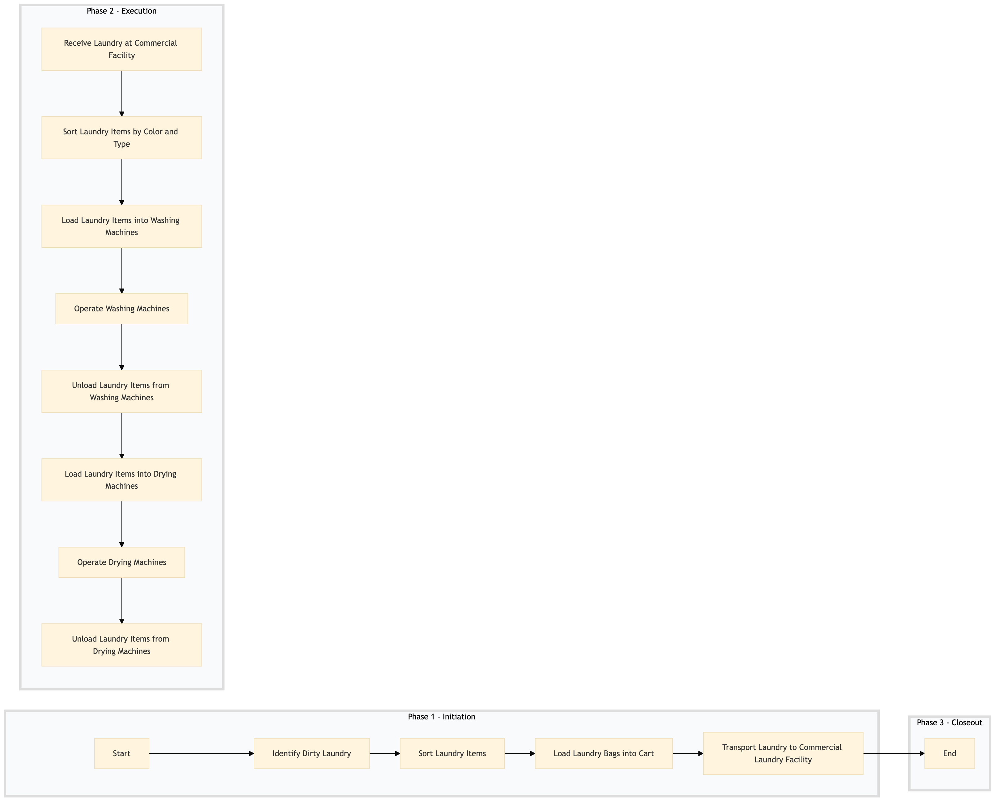

| Role | Steps |
|---|---|
| Housekeeping Staff | 1.1 1.2 1.3 1.4 |
| Laundry Staff | 1.1 1.2 1.3 1.4 |
| Commercial Laundry Staff | 2.1 2.2 2.3 2.4 2.5 3.1 3.2 3.3 |
| Step | Name | Role | System | Input | Output | KPI | Dec? | Exc? | Pain Point / Risk |
|---|---|---|---|---|---|---|---|---|---|
| 1.1 | Identify Dirty Laundry | Housekeeping Staff | Oracle OPERA Cloud | Dirty laundry items | Laundry list with department codes | Less than 3 minutes per room inspection | N | Y | Accurate identification and classification of dirty laundry can be challenging due to the variety of items. |
| 1.2 | Sort Laundry Items | Laundry Staff | Oracle OPERA Cloud | Laundry list with department codes | Sorted laundry bags by department | Less than 5 minutes per bag of laundry | N | Y | Sorting items correctly to ensure they are cleaned together can be time-consuming. |
| 1.3 | Load Laundry Bags into Cart | Laundry Staff | Oracle OPERA Cloud | Sorted laundry bags by department | Loaded laundry cart | Less than 2 minutes per cart load | N | Y | Ensuring all items are securely loaded and not damaged during transportation. |
| 1.4 | Transport Laundry to Commercial Laundry Facility | Laundry Staff | Oracle OPERA Cloud | Loaded laundry cart | Delivered laundry bags at commercial facility | Less than 10 minutes per delivery | N | Y | Efficient transportation to avoid delays and ensure timely processing. |
| 2.1 | Receive Laundry at Commercial Facility | Commercial Laundry Staff | Oracle OPERA Cloud | Delivered laundry bags at commercial facility | Acknowledged receipt of laundry bags | Less than 5 minutes per delivery | N | Y | Accurate tracking and recording of received items to ensure proper processing. |
| 2.2 | Sort Laundry Items by Color and Type | Commercial Laundry Staff | Oracle OPERA Cloud | Acknowledged receipt of laundry bags | Sorted laundry items by color and type | Less than 10 minutes per bag | N | Y | Sorting items correctly to avoid color bleeding and ensure proper cleaning. |
| 2.3 | Load Laundry Items into Washing Machines | Commercial Laundry Staff | Oracle OPERA Cloud | Sorted laundry items by color and type | Loaded washing machines | Less than 5 minutes per machine load | N | Y | Ensuring proper loading to maximize efficiency and minimize water usage. |
| 2.4 | Operate Washing Machines | Commercial Laundry Staff | Oracle OPERA Cloud | Loaded washing machines | Washed laundry items | Less than 30 minutes per load cycle | N | Y | Monitoring and adjusting settings for optimal cleaning results. |
| 2.5 | Unload Laundry Items from Washing Machines | Commercial Laundry Staff | Oracle OPERA Cloud | Washed laundry items | Unloaded and sorted laundry items | Less than 10 minutes per machine unload | N | Y | Handling delicate items carefully to avoid damage. |
| 3.1 | Load Laundry Items into Drying Machines | Commercial Laundry Staff | Oracle OPERA Cloud | Unloaded and sorted laundry items | Loaded drying machines | Less than 5 minutes per machine load | N | Y | Ensuring proper loading to maximize efficiency and minimize energy usage. |
| 3.2 | Operate Drying Machines | Commercial Laundry Staff | Oracle OPERA Cloud | Loaded drying machines | Dried laundry items | Less than 45 minutes per load cycle | N | Y | Monitoring and adjusting settings for optimal drying results. |
| 3.3 | Unload Laundry Items from Drying Machines | Commercial Laundry Staff | Oracle OPERA Cloud | Dried laundry items | Unloaded and sorted laundry items | Less than 10 minutes per machine unload | N | Y | Handling delicate items carefully to avoid damage. |
The Commercial Laundry Processing process at a Marriott full-service hotel involves managing the collection, sorting, and delivery of commercial laundry items. This ensures that all linens and uniforms are cleaned efficiently and returned to their respective departments in a timely manner.